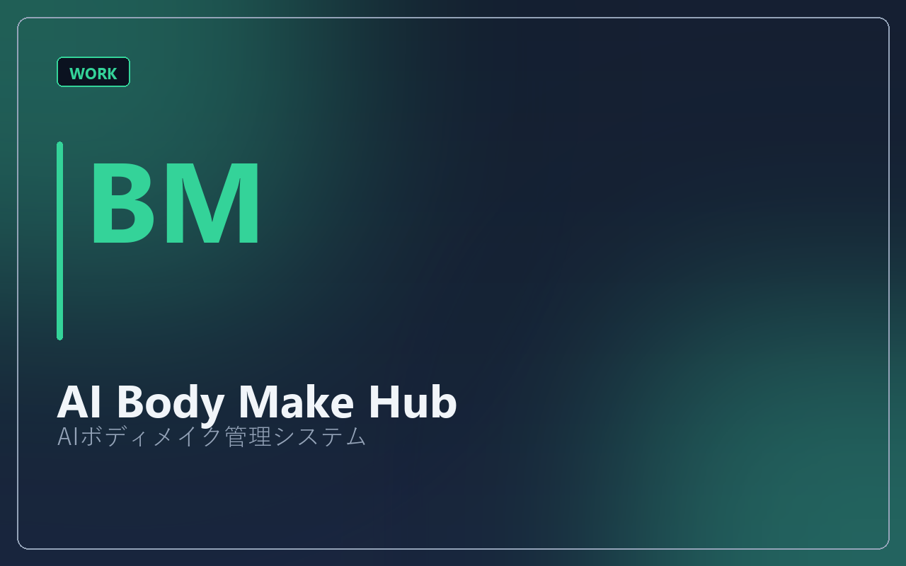
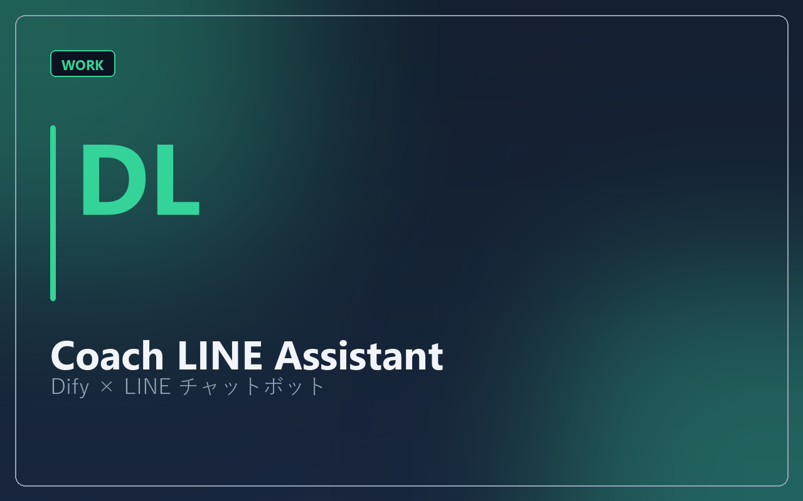
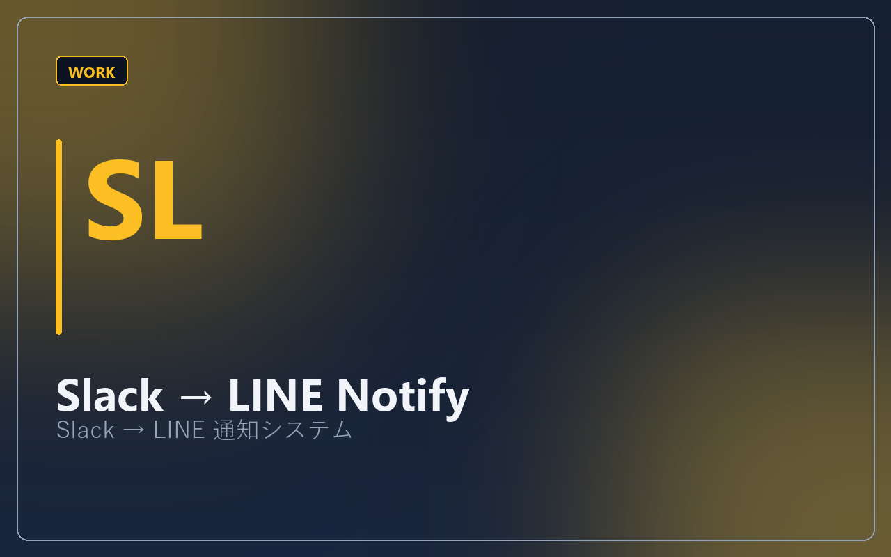
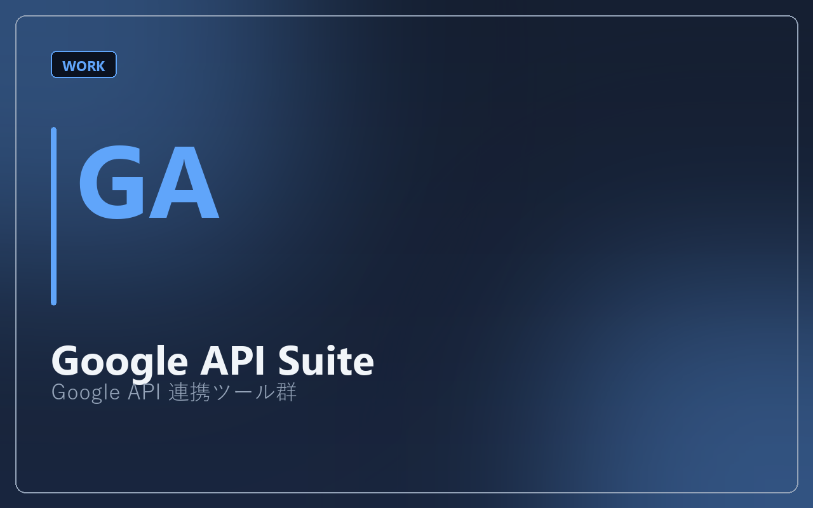

ジム・スタジオのオーナー
会員の食事・体重・トレーニング記録がバラバラで、指導に時間を取られている方へ。
FOR YOU
会員の食事・体重・トレーニング記録がバラバラで、指導に時間を取られている方へ。
LINEで指導しているが、記録の回収やフォローが手作業になっている方へ。
AIは試したいが、何から作ればいいかわからない。まず小さく試したい方へ。
STRENGTHS
パーソナルトレーナーとして、ボディメイク・ダイエット指導の現場経験があります。クライアントが「続かない」理由を、ツールの前に整理します。
記録 → データ蓄積 → AIフィードバック → LINE通知。習慣づくりの流れを、技術で支える構成を得意としています。
制作物はデモ・GitHubで公開しています。口先ではなく、動くもので確認いただけます。
PICK UP
フィットネス・健康領域を中心に、公開デモでご確認いただけます。
PROFILE
パーソナルトレーナーとして、ボディメイクやダイエット指導の現場に立ってきました。食事の記録、体重の変化、トレーニングの継続——うまくいく人と、途中で止まってしまう人の違いは、「意志」だけではなく、「仕組み」にあると感じています。
そこでAI・自動化・API連携を学び、記録アプリ、LINE Bot、Slackからの通知など、自分とクライアントの日常を楽にするツールを自作してきました。いまはジム・コーチ・オンライン指導者向けに、同じような「続ける仕組み」を一緒に作ることを仕事にしています。
バイクや車でのツーリングも好きです。移動の計画やルート設計の経験は、ツーリングプランナー制作などにも活かしています。
LINEで相談するSKILLS
ジム・コーチ向けのサービスを中心に、API連携と自動化で業務を楽にします。料金・範囲は案件ごとに異なるため、まずはご相談ください。
食事・体重・トレーニングの入力、Googleスプレッドシートへの保存、グラフ表示。DifyによるAIアドバイス連携も可能です。
料金：要相談
FAQ対応、食事・トレーニングの一次相談、会員フォローの土台づくり。Messaging APIとDifyを連携します。
料金：要相談
Slack→LINE、定時通知、Googleカレンダー・Gmail・ドライブなど既存ツールとの連携。
料金：要相談
現状のツール、困りごと、理想の運用を整理
1〜2週間で試せる最小構成を提案・実装
フィードバックを反映し、機能を段階的に拡張
通知設定、プロンプト調整など（任意）
WORKS
フィットネス・健康領域を中心に開発しました。詳細ページで課題・解決・技術をご覧いただけます。

Client Body Make Hub
食事・体重・筋トレを記録し、AIアドバイスとLINE通知まで一気通貫。

Fit Quiz AI
初・中・上級のクイズで、スタッフ教育・会員の知識定着を支援。

Coach LINE Assistant
LINEで会話が続く。DifyとWebhook連携のボット基盤。

Slackの重要メッセージをLINEに届け、見逃しを防ぐ。

スプレッドシート・カレンダー・Gmail・ドライブなど、業務ツール連携の実装経験。

Tour Planner
MapsのルートとDifyの旅程提案を組み合わせたWebアプリ。
※ Maps＋AI連携の技術実証として掲載